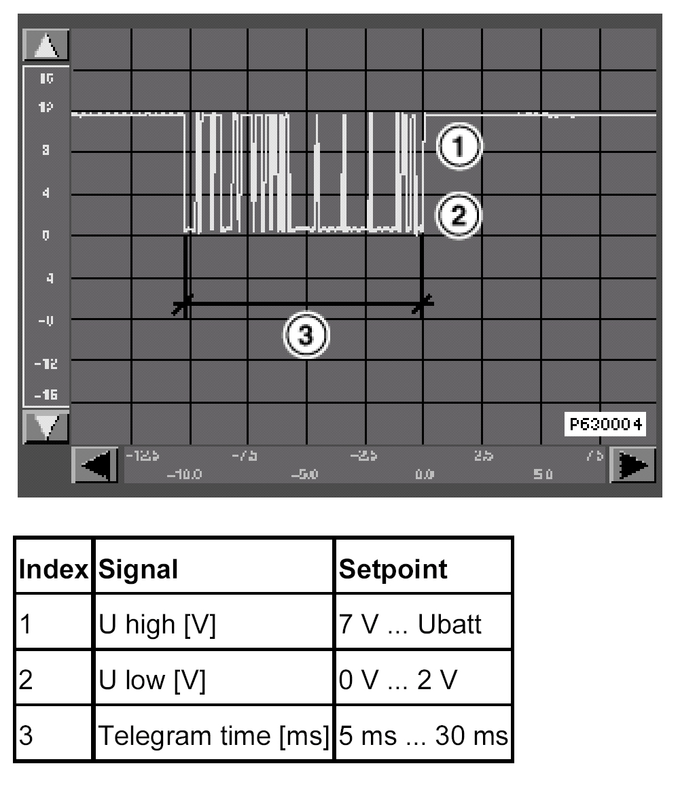

Oscillogram I-Bus/K-Bus Signals
Oscillogram I-Bus/K-Bus Signals
Waveform:

NOTE: When measuring, the number and sequence of individual pulses may differ compared to the example given. It is important to assess the entire signal in accordance with the table.